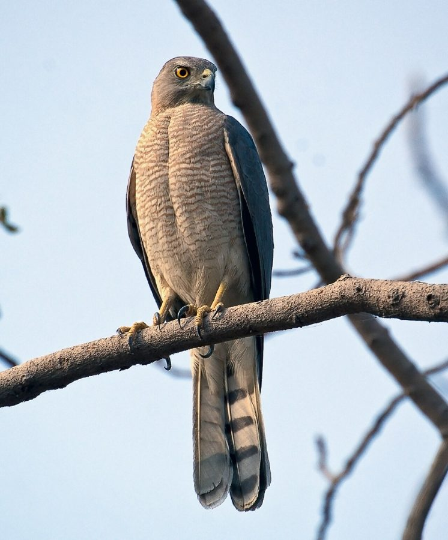

शिकराShikra
Accipiter badius · Accipitridae · BRD-0044

- Scientific name
- Accipiter badius (Gmelin, 1788)
- Family
- Accipitridae
- Hindi
- शिकरा
- Status here
- native
- IUCN
- LC
When to look कब देखें
Present all year.
शिकरा / Shikra
Accipiter badius (Gmelin, 1788) — Accipitridae
शिकरा — पूर्वी उत्तर प्रदेश के ग्रामीण इलाकों, आम के बागों और मिश्रित वनों में पाया जाने वाला एक छोटा, फुर्तीला और अत्यंत सामान्य शिकारी पक्षी है। नर का ऊपरी हिस्सा हल्का धूसर-नीला और पेट पर बारीक लाल-भूरी धारियां होती हैं, जबकि मादा नर से आकार में बड़ी और अधिक भूरे रंग की होती है। इसकी छोटी, गोल और मजबूत पंख तथा लंबी पूंछ इसे पेड़ों और झाड़ियों के बीच बेहद तेज गति से उड़ान भरने और अचानक झपट्टा मारकर शिकार करने में मदद करती है। यह छिपकर बैठने वाला शिकारी है जो एक सूखी टहनी पर सीधा बैठकर अपने शिकार (जैसे छोटी चिड़िया, छिपकली और बड़े कीड़े) की निगरानी करता है और बिजली की तेजी से उन पर हमला करता है। इसकी तेज और तीखी आवाज "ट्यू-ट्यू-ट्यू" ग्रामीण क्षेत्रों के वन खंडों के आसपास एक बहुत ही आम आवाज है।
Quick Identification त्वरित पहचान
| Feature | Description |
|---|---|
| Size | Small hawk (25–36 cm total length); females are noticeably larger than males |
| Shape | Short, rounded wings and a relatively long, narrow, square-tipped tail |
| Colouration | Upperparts pale grey (male) or brown (female); white underparts with fine rufous-orange bars |
| Eyes | Bright yellow or orange-red irises in adults; dark yellow in immatures |
| Bare Parts | Yellow cere, legs, and feet; claws are black and sharp; bill is black-tipped and hooked |
| Flight | Rapid flaps alternating with short glides; highly maneuverable through dense foliage |
Field tip: Look for a small, upright-perching hawk on a bare branch or electric wire near village orchards. In flight, notice its "forest hawk" silhouette with short rounded wings and a long barred tail. Female is shown in the field tip as she is larger and more frequently spotted.
Morphology आकारिकी
Biometrics (typical measurements in the northern Indian plains showing reverse sexual size dimorphism):
| Measurement | Range |
|---|---|
| Total length (Male) | 250–300 mm |
| Total length (Female) | 300–360 mm |
| Wing (Male) | 170–190 mm |
| Wing (Female) | 200–225 mm |
| Tail (Male) | 125–140 mm |
| Tail (Female) | 150–170 mm |
| Tarsus (Male) | 47–52 mm |
| Tarsus (Female) | 52–57 mm |
| Bill (Male) | 18–20 mm |
| Bill (Female) | 20–22 mm |
| Weight (Male) | 100–160 g |
| Weight (Female) | 180–260 g |
Plumage: Adults display a distinct pale ash-grey or bluish-grey crown, mantle, and wing-coverts. The chin and throat are white with a narrow, dark mesial stripe down the center. The breast and abdomen are white, closely barred with rufous-brown or orange-brown. The tail has several dark bands, which are most visible in flight. The juvenile is brown above with pale spots and has large drop-shaped dark streaks on the breast instead of horizontal bars.
Bare parts: The hooked bill is dark slate-grey, becoming black at the tip, with a yellow cere at the base. The eyes are pale yellow in young birds, turning bright orange-red or golden-yellow in adult males, and deep yellow in adult females. The legs and feet are yellow with sharp black talons.
Vocalisations
The Shikra is highly vocal, especially during the breeding season.
- Contact and courtship call: A loud, sharp, double-note whistle, tyu-tyu-tyu or ti-tu-ti-tu, repeated rapidly, often mimicking the call of the Common Hawk-Cuckoo.
- Alarm call: A high-pitched, screaming chatter, kik-kik-kik-kik, uttered when crows or larger raptors encroach upon its nesting territory.
Behaviour & Ecology व्यवहार और पारिस्थितिकी
- Hunting style: A classic "surprise hunter." Unlike open-country falcons or kites that hunt in mid-air or hover, the Shikra sits concealed in foliage and makes a sudden, dashing ambush flight to capture prey.
- Roosting and perching: Rests in dense-foliaged trees such as Mango (Mangifera indica) or Jamun (Syzygium cumini) during midday heat, but uses bare outer branches or telegraph poles to scan for prey in the early mornings and late evenings.
- Interspecific conflict: Frequently mobbed by House Crows (Corvus splendens) and Drongos (Dicrurus macrocercus). It will aggressively chase away smaller birds and defend its nesting tree.
Life Cycle / Phenology जीवन चक्र
- Breeding season: March to June in northern India.
- Nesting: Builds a loose, unlined platform nest of twigs, resembling a crow's nest but typically smaller and neater.
- Nest site: Placed high up in the fork of a mature tree, often Mango, Neem (Azadirachta indica), or Shisham (Dalbergia sissoo).
- Clutch size: 3 to 4 pale bluish-white eggs, occasionally speckled with grey or red.
- Incubation: 30–35 days, performed mainly by the female while the male provides food.
- Fledging: The young are fed by both parents. They fledge in about 30–32 days and remain with the parents for a few weeks to learn hunting techniques.
Host Plants or Prey आहार
Primary food items:
- Lizards: Garden lizards (Calotes versicolor) and house geckos.
- Birds: Sparrows, munias, baby doves, and other small passerines.
- Insects: Large grasshoppers, locusts, mantises, and winged termites during monsoon emergences.
- Small mammals: Field mice, shrews, and young squirrels.
Predators / Natural Enemies शत्रु
- Larger raptors: Black Kites (Milvus migrans) and Bonelli's Eagles prey on Shikra chicks and juveniles.
- Corvids: House Crows (Corvus splendens) frequently raid nests to steal eggs and chicks.
- Reptiles: Large arboreal snakes like the Indian Rat Snake (Ptyas mucosa) raid nests in search of eggs.
Agricultural / Human Relevance कृषि प्रासंगिकता
Natural pest control agent. Shikras are highly beneficial to agricultural communities in Basti as they consume field rodents, destructive grasshoppers, and house sparrows that damage ripening crops.
Conservation and legal status: Protected under Schedule IV of the Wildlife Protection Act, 1972. It is illegal to hunt, capture, or keep them as pets. Historically, they were widely trained by falconers in India, a practice now banned. Secondary poisoning through chemical pesticides and rodenticides is a major threat.
Expected Locally स्थानीय रूप से अपेक्षित
Not a field record. Written from published accounts for eastern Uttar Pradesh. No confirmed local sighting yet — if you have seen it, that is what the atlas needs.
अभी तक स्थानीय पुष्टि नहीं। यह विवरण प्रकाशित स्रोतों से है, किसी अवलोकन से नहीं।
The Shikra is a very common resident throughout the Basti district, especially in mango groves, village woodlots, and around crop edges in rural areas. They are frequently observed sitting on telegraph wires or dry branches along roadsides. During the nesting season (March–May), their loud tyu-tyu-tyu calls can be heard throughout the day in mature groves.
Distribution वितरण
Global range: Widespread across the Indian Subcontinent, parts of Central Asia, the Middle East, and sub-Saharan Africa.
In India: Found throughout the plains and hills up to 1,400 metres in the Himalayas.
In Uttar Pradesh: A highly common resident state-wide in all forest patches, agricultural areas, and rural habitats.
In Basti district / eastern UP: Commonly recorded in orchards and village commons across all blocks.
Research Questions शोध प्रश्न
Anyone can investigate these | कोई भी इन प्रश्नों की जाँच कर सकता है
- How many seconds does a Shikra sit on a hunting perch before moving or attacking? / शिकरा हमला करने या अपनी जगह बदलने से पहले कितनी देर एक जगह बैठता है? — Measure and record perching time across different times of day.
- What percentage of Shikra attacks on garden lizards are successful? — Document individual hunting sequences and capture success rates.
- Do Shikras prefer nesting in mango trees over other tree species in Basti orchards? / क्या बस्ती के बागों में शिकरा अन्य पेड़ों की तुलना में आम के पेड़ों पर घोंसला बनाना अधिक पसंद करता है? — Survey and map nesting trees.
- How do Shikras react when mobbed by Drongos versus House Crows? — Compare flight patterns and defensive reactions.
- How does the nesting success of Shikras correlate with the presence of village ponds within 500 meters? — Map nests and water sources to identify habitat preferences.
Similar Species मिलती-जुलती प्रजातियाँ
| Species | Key Difference | हिंदी |
|---|---|---|
| Eurasian Sparrowhawk (Accipiter nisus) | Larger; longer legs; distinct white supercilium; winter migrant to northern India, not resident | यूरेशियाई चिड़िया-बाज — सफ़ेद भौंह, केवल सर्दियों का प्रवासी |
| Besra (Accipiter virgatus) | Darker chin stripe (gular stripe); darker upperparts; prefers dense hill forests, rare in local plains | बेसरा — गहरा गाल-पट्टी, पहाड़ी वनों का निवासी |
| Black-winged Kite (Elanus caeruleus) | Pure white and pale grey plumage; jet-black shoulders; red eyes; hovers in mid-air | कपसी — सफ़ेद शरीर, काले कंधे, लाल आँखें |
Field rule: Small grey-and-white forest hawk with fine rufous barring on the breast, yellow/orange eyes, and short rounded wings perching upright in leafy trees is a Shikra.
Taxonomy & Classification वर्गीकरण
Original description. Johann Friedrich Gmelin described the Shikra as Falco badius in 1788 in Carl Linnaeus's Systema Naturae (ed. 13, vol. 1, part 1, p. 280). The type locality was Ceylon (now Sri Lanka). The genus name Accipiter is Latin for a hawk, from accipere (to seize). The species name badius is Latin for chestnut-brown or reddish-brown.
Subspecies. Six subspecies are recognised globally. The subspecies resident in the Indian Subcontinent is:
| Subspecies | Authority | Range | Notes |
|---|---|---|---|
| A. b. dussumieri | (Temminck, 1824) | Indian Subcontinent | UP subspecies; larger and paler grey than the Sri Lankan nominate form A. b. badius |
Family and order placement. Placed in the order Accipitriformes, family Accipitridae, subfamily Accipitrinae (true hawks).
Phylogenetic notes. Genetic studies show that Accipiter badius is part of a clade of small Old World sparrowhawks, closely related to the Levant Sparrowhawk (Accipiter brevipes).
IUCN status rationale. Listed as Least Concern (LC). The species has an extremely large global range, stable population trends, and is highly adaptable to agricultural woodlands and rural areas.
Photo Gallery फोटो गैलरी
References संदर्भ
- Gmelin, J. F. (1788). Systema Naturae. Volume 1, Part 1. Lipsiae, p. 280. [original description]
- Ali, S. & Ripley, S. D. (1999). Handbook of the Birds of India and Pakistan. Vol. 1. Oxford University Press, New Delhi.
- Grimmett, R., Inskipp, C. & Inskipp, T. (2011). Birds of the Indian Subcontinent. 2nd ed. Christopher Helm, London.
- Ferguson-Lees, J. & Christie, D. A. (2001). Raptors of the World. Christopher Helm, London.
- BirdLife International (2024). Accipiter badius. IUCN Red List of Threatened Species. Ver. 2024.
- GBIF Occurrence Data — Accipiter badius, Uttar Pradesh (2010–2025).
Source file: species/fauna/birds/shikra.md